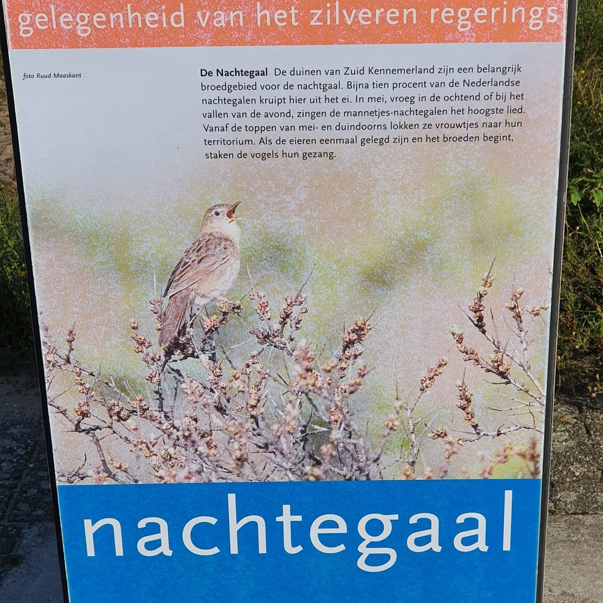

Sprinkhaanzanger, geen nachtegaal
19 september 2020 · PWN
- Op de foto
- Sprinkhaanzanger
- Het ging over
- Nachtegaal

O o o @pwnwaternatuur. Een mooie sprinkhaanzanger op het bord van de kennemerduinen bij ingang bentveld. Volgende keer even laten controleren door een gerenommeerde vogelaar ;)